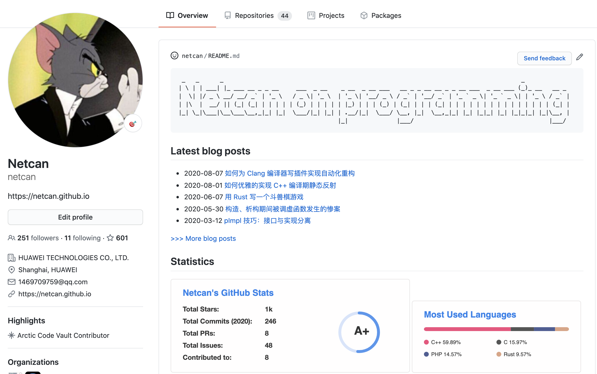

最近在 Hacker News https://news.ycombinator.com/item?id=23807881 看到一个很有意思的讨论，给 Github 个人主页打造一个炫酷风格的介绍，比如我这个效果：https://github.com/netcan/netcan

首先需要创建一个与自己用户名同名的 project，然后更新 README.md，最终内容会体现在个人的 github 主页，如上图所示。我维护一个脚本来抓取 blog feed 内容用于生成 README.md。
import requests
import xml.etree.ElementTree as ET
feed = requests.get('https://netcan.github.io/atom.xml').text
root = ET.fromstring(feed)
nsfeed = {'nsfeed': 'http://www.w3.org/2005/Atom'}
with open('README.md', 'w') as f:
f.write(r'''
_ _ _ _
| \ | | ___| |_ ___ __ _ _ __ ___ _ __ _ __ _ __ ___ __ _ _ __ __ _ _ __ ___ _ __ ___ (_)_ __ __ _
| \| |/ _ \ __/ __/ _` | '_ \ / _ \|'_ \ | '_ \|'__/ _ \ / _` | '__/ _` |'_ ` _ \| '_ ` _ \| |'_ \ / _` |
| |\ | __/ || (_| (_| | | | | | (_) | | | | | |_) | | | (_) | (_| | | | (_| | | | | | | | | | | | | | | | (_| |
|_| \_|\___|\__\___\__,_|_| |_| \___/|_| |_| | .__/|_| \___/ \__, |_| \__,_|_| |_| |_|_| |_| |_|_|_| |_|\__, |
|_| |___/ |___/
## Latest blog posts
''')
for entry in root.findall('nsfeed:entry', nsfeed)[:5]:
text = entry.find('nsfeed:title', nsfeed).text
url = entry.find('nsfeed:link', nsfeed).attrib['href']
published = entry.find('nsfeed:published', nsfeed).text[:10]
f.write('- {} [{}]({})\n'.format(published, text, url))
f.write('''
[>>> More blog posts](https://netcan.github.io/archives/)
## Statistics


''')而 https://github.com/anuraghazra/github-readme-stats 这个项目提供了个人数据统计图，可以很好的嵌入到 markdown 中，个人 Logo 字体用 figlet 工具生成。